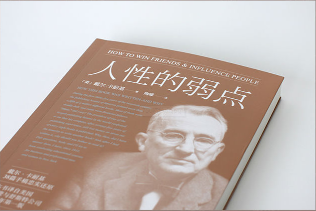
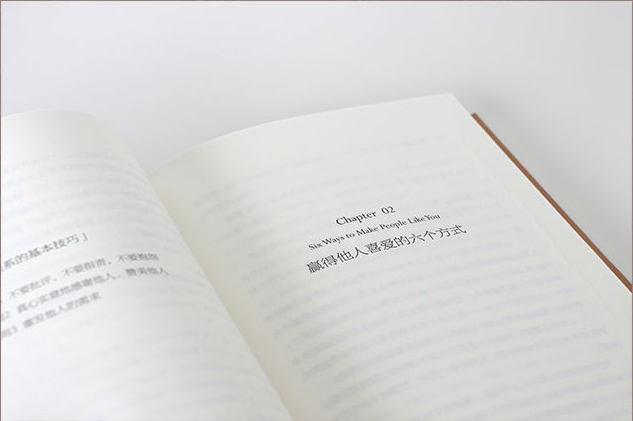

首页


Previous
Next
商品名称: 《人性的弱点》
价 格:￥19.70
商品类型：书籍
运费:包邮
库存：有货
1.此商品不支持7天无理由退货
2.此商品由 海囤全球 发货并提供售后服务
3.此商品不提供国内购物发票
4.此商品支持白条30天免息或分期支付，不可使用京豆、京东卡、京东E卡、余额支付，不支持货到付款
5.根据中国海关总署要求，您所购买的商品清关入境需要提供身份证信息进行入境申报，请您配合。我们不会向第三方泄露您的资料，请您放心
立即购买
加入购物车
详 情
内容简介: 《人性的弱点》是1937年最初首印版本原汁原味的复刻，收录了卡耐基本人、他的朋友为此书所写的内容推荐与背景介绍，并完整保留首版中卡耐基对婚姻与家庭的真知灼见。此外，本版新译的语言风格更贴近当下 人们的阅读喜好，在融合时下语言风潮的同时也不失中文特有的韵味。《人性的弱点》作为一本实用的人际关系著作，从人性本质的角度，挖掘出潜藏在人们体内的弱点，使人们能够充分认识自己，并不断改造自己，从 而能有所长进，直至取得最后的成功。在过去的77年里，戴尔·卡耐基的忠告带领着上千万名读者攀登上成功的阶梯，无论在事业方面还是个人生活上，他的箴言不断被一代代人实践与验证。在出版史上，本书创造了全 世界图书销售空前的记录。在经济萧条时期之后，本书满足了普遍存在的人性的需要，触动了读者的神经，在当今社会依然有其特有的借鉴价值。 作者简介: 戴尔·卡耐基（DaleCarnegie，1888-1955年)，★20世纪伟大的成功学大师★美国现代成人教育之父★著名演说家、心理学和人际关系学家。 戴尔·卡耐基出生于1888年11月24日，逝世于1955年11月1日，享年67岁。 1904年，卡耐基高中毕业后就读于密苏里州华伦斯堡州立师范学院，他是全校600名学生中五六个住不起市镇的学生之一，四处打工弥补学费。1906年，戴尔·卡耐基一篇以《童年的记忆》为题的演说，获得了勒伯第青年演说家奖。这是他首次成功尝试。1908年，他成了全院的风云人物，在各种场合的演讲赛中大出风头。1908年毕业后，他受雇做了一名推销员，后来又以贩卖火腿、肥皂和猪油为生。推销工作虽然很成功，但不合他的理想。他想过更有意义的生活。于是他将他一生中极为重要、丰富的经验，汇集在《人性的弱点》一书中。卡耐基一生结过两次婚，一任夫人是一位法国女伯爵，婚姻仅维持了十年。第二任夫人姚乐丝·卡耐基于1944年和他结婚，是他的门徒和事业的继承人，并给他生一女孩，取名Donna（唐娜）。 戴尔·卡耐基毕生致力于人性问题的研究，创立独特的融演讲、推销、为人处世、智能开发于一体的成人教育方式。代表作《人性的弱点》《人性的优点》《美好的人生》《沟通的艺术》等风靡全球，被各个国家和阶层奉若经典，无数读者由此走上了成功之路。在他辞世半个世纪后，他的书仍占据美国《纽约时报》畅销榜前列，被誉为“人类出版史上的奇迹”。
评 价
暂无评价